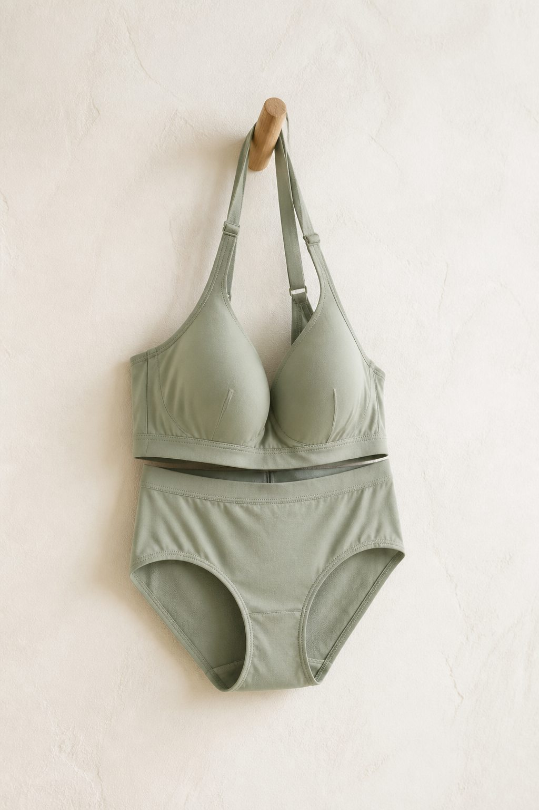
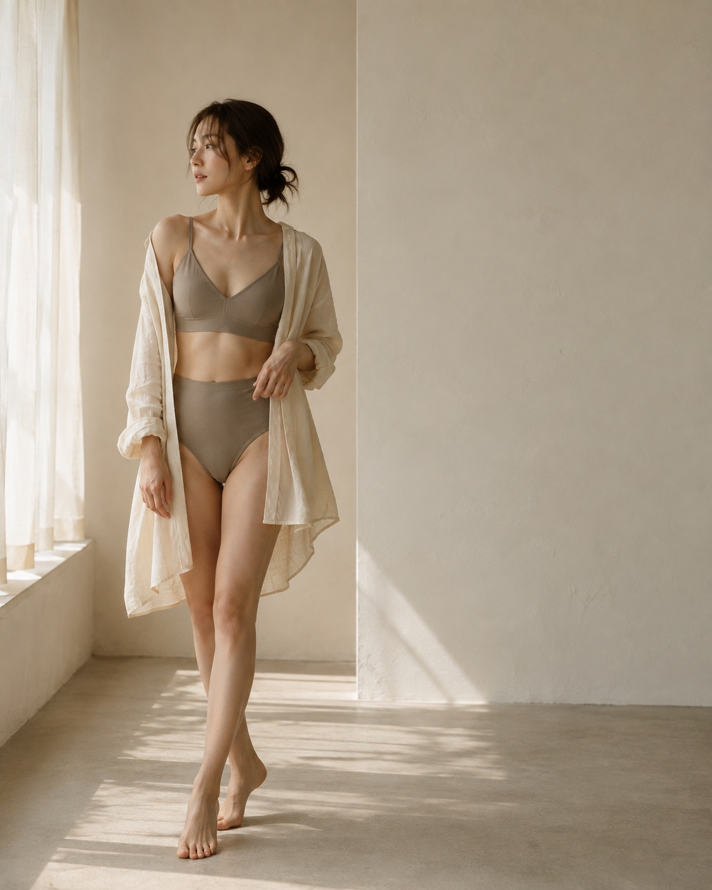
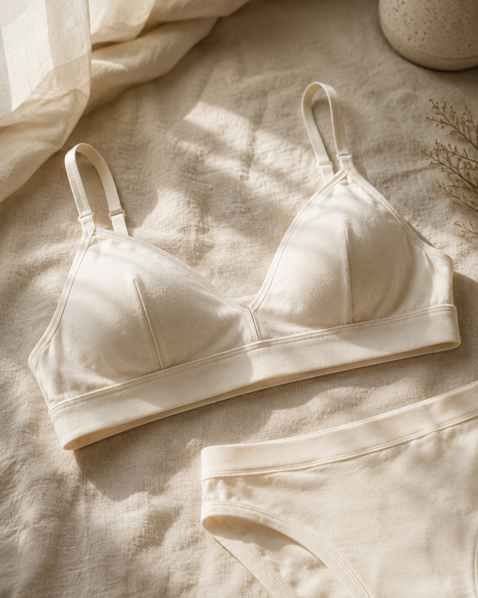
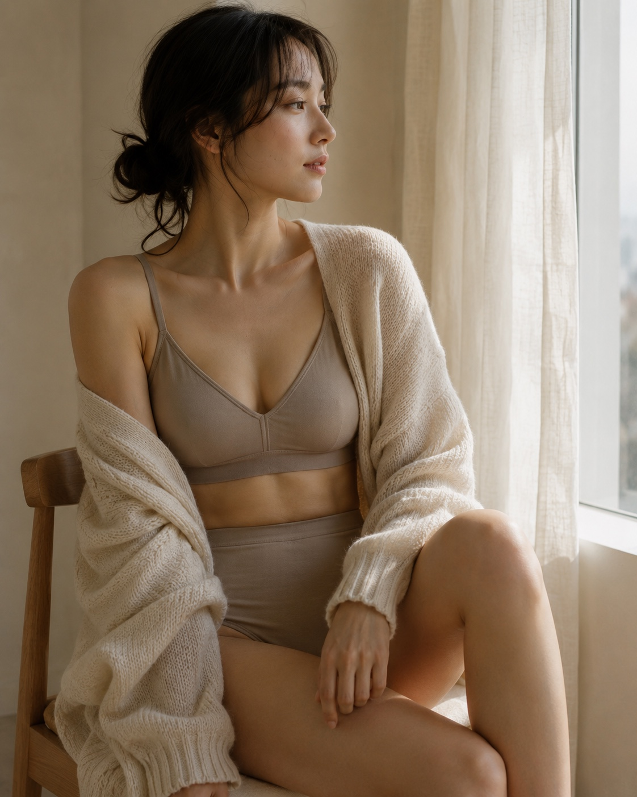
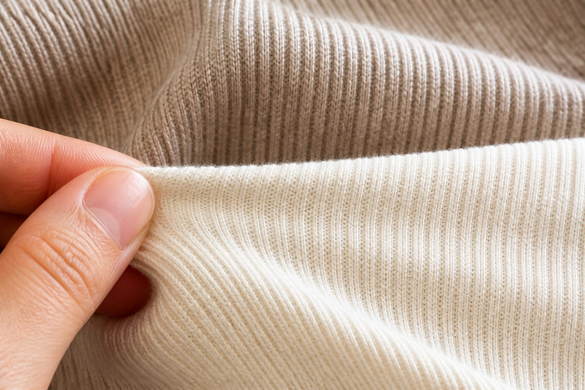
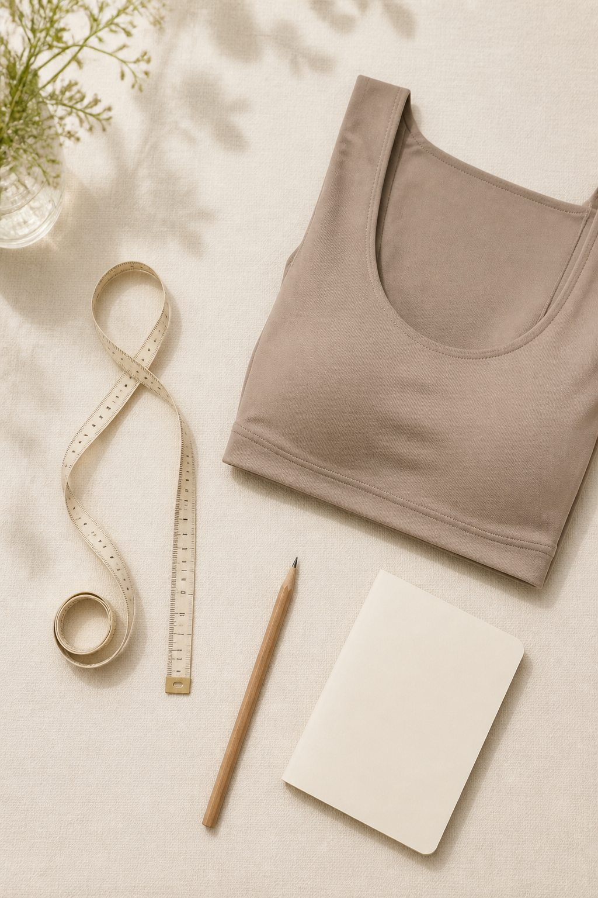
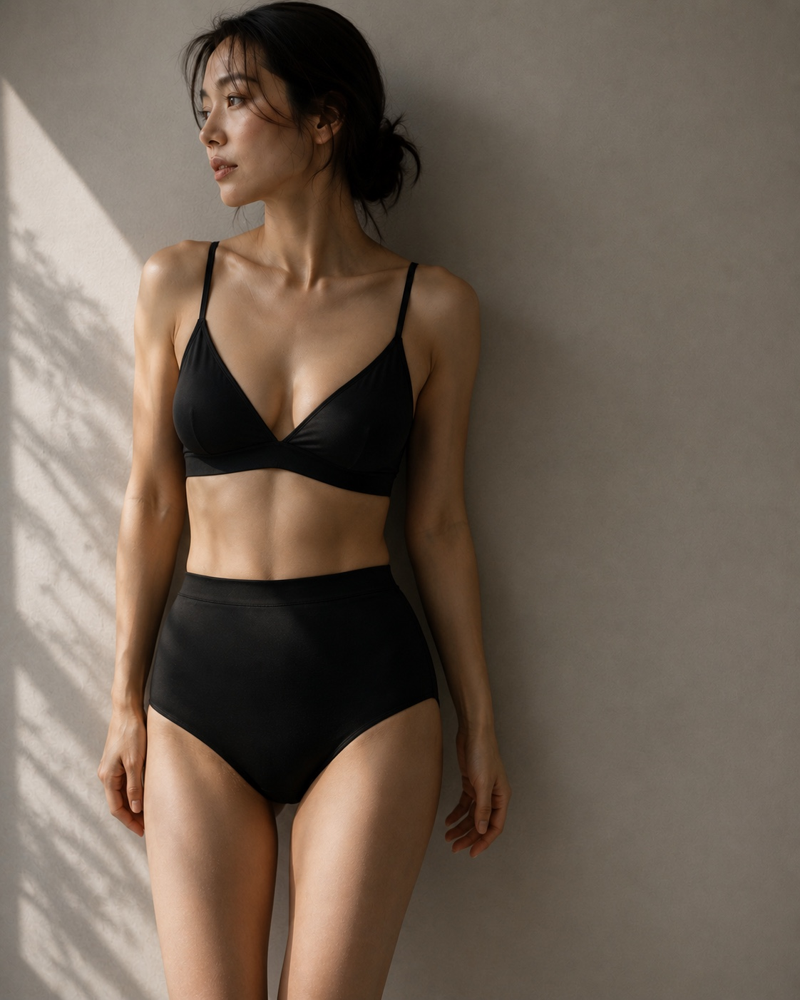

ソフトエアブラ
軽さを楽しむノンワイヤー
¥4,290 （税込）
01 / FOR YOUR DAY
どちらかを我慢しないために、nueは日々の小さな違和感からインナーを考えます。今日はどんなふうに過ごしたいですか。
着け心地の好みは、予定や服によって変わるもの。3つのタイプから、今の自分に合う一枚を。
OUR STANDARD


02 / COMFORT
長時間着けていても負担になりにくいこと。服を着たときに、自然に整って見えること。毎日の使いやすさを基準に、素材とパターンを選んでいます。
幅広のアンダーと伸びのよい生地で、動きに合わせながら安定します。
縫い代やタグの位置まで見直し、気になりにくい仕様にしました。
盛りすぎず、服を着たときに自然に整うシルエットを目指しています。
03 / MATERIAL
毎日気持ちよく使えることを基準に、なめらかさ、通気性、洗濯後の変化まで確かめて素材を選びます。

04 / 24 HOURS
服を選ぶ時間も、インナーが自然になじむと少し軽やかに。

05 / SIZE GUIDE
いつものサイズだけで決めず、まずはトップとアンダーを測ってみてください。今の身体に合う目安をご案内します。
COLOR / BLACK
透けにくさや合わせやすさだけでなく、身につけたときの気持ちまで、すっと整えてくれる色。nueのBLACKは、光の中で質感がきれいに見える、やわらかな黒です。

06 / OUR STORY
インナーは、誰かに見せるためだけのものではありません。朝、身につけてから夜に脱ぐまで。何度も意識しなくても、からだを気持ちよく支えていること。
nueは、日常の中で本当に使いやすい形を、小さな違和感を見逃さずにつくります。
VOICE / 掲載イメージ
★★★★★「夕方になっても肩が気になりにくく、仕事の日につい選んでしまいます。」
★★★★★「薄手のニットでも線がひびきにくい。色も落ち着いていて使いやすいです。」
★★★★☆「締め付けが苦手ですが、これは軽くて家でも外でも使えました。」
07 / CARE
ほんの少し丁寧に扱うだけで、フィット感は長持ちします。
30℃以下の水と中性洗剤で。
ねじらず、形を整えます。
直射日光と乾燥機は避けて。
JOURNAL
08 / FAQ
商品ごとのサイズ表と、トップ・アンダーの測り方をご確認ください。迷う場合はコンタクトページからご相談いただけます（デモのため送信機能はありません）。
このコレクションはすべてノンワイヤーです。構造と生地の切り替えで自然に支える設計です。
洗濯ネットに入れ、弱水流で洗えます。より長持ちさせたい場合は手洗いがおすすめです。
このサイトは架空ブランドのサンプルのため販売は行っていません。実在の返品・交換制度はありません。
毎日にちょうどいい一枚を。